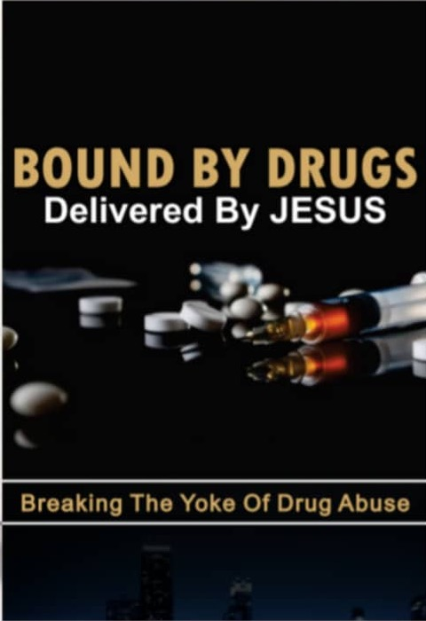

HOPE FOR THE JOURNEY TO FREEDOM
There is a way
forward.
A message of faith, compassion and hope for people facing addiction—and for the families who love them.
Author · Minister · Advocate for recovery
&
FREEDOM
COMPASSION. FAITH. A NEW BEGINNING.
Walking with people
toward freedom.
Drug dependence can affect anyone. We believe no one should have to face it alone, and that every person can be met with compassion, prayer and practical support.
Through ministry, teaching and the message of Bound by Drugs, Delivered by Jesus, we hope to encourage people in recovery and equip families, churches and communities to walk alongside them.

A RESOURCE FOR THE RECOVERY JOURNEY
Bound by Drugs,
Delivered by Jesus
Breaking the yoke of drug abuse
A faith-based look at drug and substance abuse, its impact on individuals and families, and the journey toward freedom. Written for those seeking hope, as well as pastors, ministers and everyone supporting someone in recovery.
We’ll add the Amazon link here soon.
YOU DON'T HAVE TO WALK ALONE
Hope begins
with a conversation.
Looking for ministry support, or seeking guidance for someone you love? Reach out to your local healthcare provider or a trusted recovery service. Ministry contact details will be added here soon.
Contact the ministry ↗This ministry offers faith-based encouragement and is not a substitute for medical care or professional addiction treatment. If someone is in immediate danger, contact local emergency services.